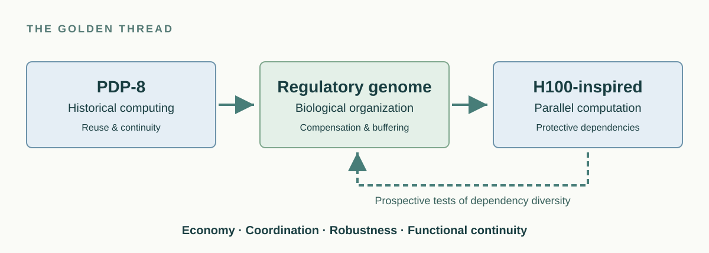

Flagship bench activity · Experience before equation
The Singing Rule
Pluck a ruler at a table edge. Follow the bench run from a Bluetooth trace to a model you can test yourself.
Randall Young · Public Working Archive
How much? Enough? Measure what happened, then decide whether it was enough for the purpose—across teaching labs, instruments, movement, and research.
Flagship bench activity · Experience before equation
Pluck a ruler at a table edge. Follow the bench run from a Bluetooth trace to a model you can test yourself.

Research & scholarship · Three papers + open lab
Can function endure as implementation changes? Follow one question from the PDP-8 to peroxide-managing enzymes and AI-assisted inquiry.
Flagship bench lab
The Singing RuleBluetooth ringdown trace to interactive vibration model.
CORE 10 · Energy
Pop-Can CalorimeterFollow a candle from grams of fuel to joules in water.
Physical calculus
Galileo’s Water ClockWeigh water, calibrate flow, and time a ramp.
Kitchen Inquiry
TeaTime · Beer–LambertCalibrate light transmission to identify an unknown.
Inquiry design
Invent a Sphericity MeterInvent a repeatable rule for shape and test its limits.
Open Lab · Biology
Catalase Open LabYeast, peroxide, gas collection, and teacher/student guides.
Instrument workshop
Virtual InstrumentsFive wireless builds—voltmeter, frequency meter, scale, ToF ruler, thermometer.
Bargain Bin Robotics
Lazy LiDARBuild a room map from patient readings and inspect heading bias.
ROBOT_EDU preview
Cutebot Motion EvidenceSeparate what a robot was told to do from what it actually did.
Gait metrology · Sensor validation
Start with a marked 11-meter leg and an independent clock, then test what a wearable step detector actually catches.

Release preview · Workload prescription
Separate prescribing physical work, verifying motion evidence, and supervising heart-rate response in an Android prototype walkthrough.
Research portal · v1.2
From Circuits to GenomesThree scholarly tracks, computational evidence, and preserved companion archive.
Biochemical benchmark
Catalase & ContinuityOne reaction, diverse molecular architectures and complementary scavenging.
Open Lab · 21 pp. guides
Catalase Open LabKitchen-table yeast & peroxide entry point with guides, Python, and data templates.